San Diego 2026
March 2026, Spring Break!
It's really nice that roz is now a 4 year old and can entertain herself on the plane, because San Diego is a 4 hour flight and I'm not sure I can still take care of a baby on a plane.
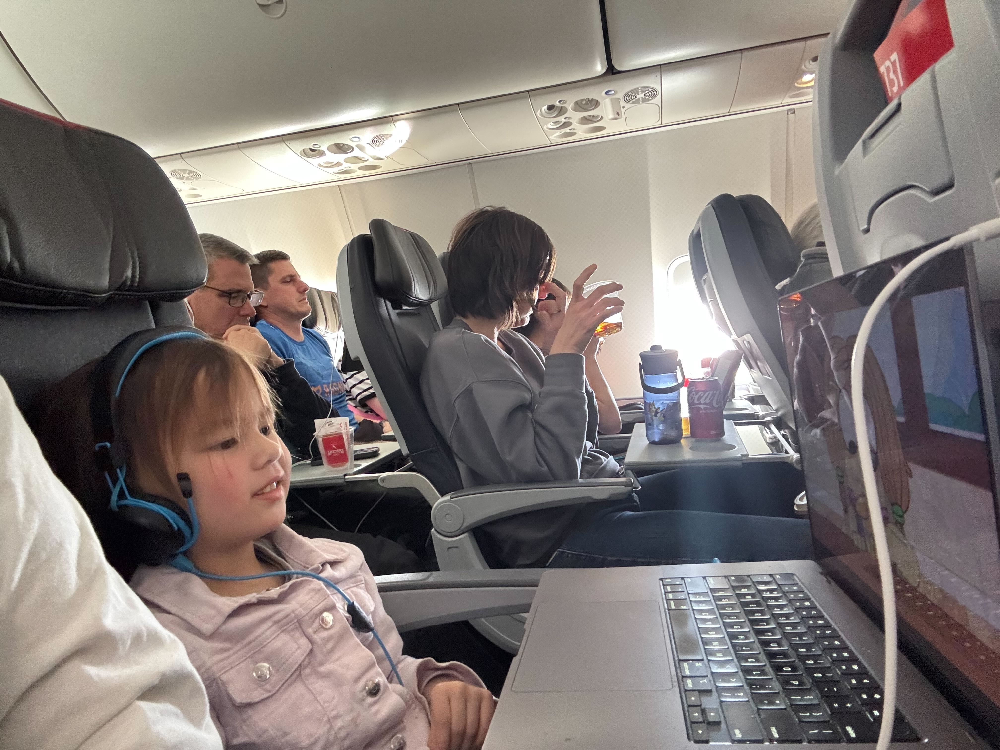
We intentionally didn't bring a stroller to see how much roz can walk; turns out she can walk a lot, but she can also whine a lot.

La Jolla was one of our favorite spots in San Diego. There's just seals chilling on the beach. The kids really enjoy humanizing the seals.
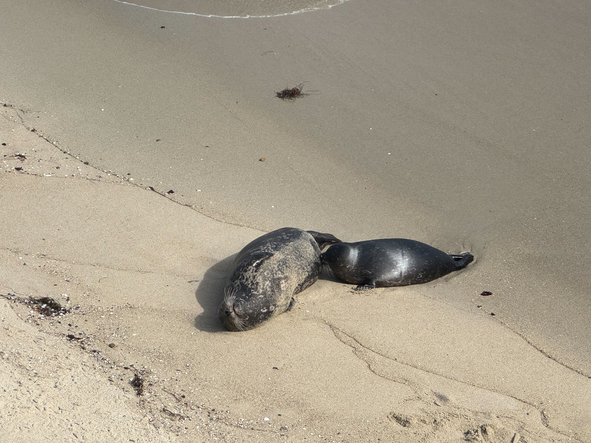
Everyone asks: "Did you goto the zoo?" The answer is no, because it was so expensive. We did end up going to Scripps Aquarium which turned out to be Verity's favorite spot.
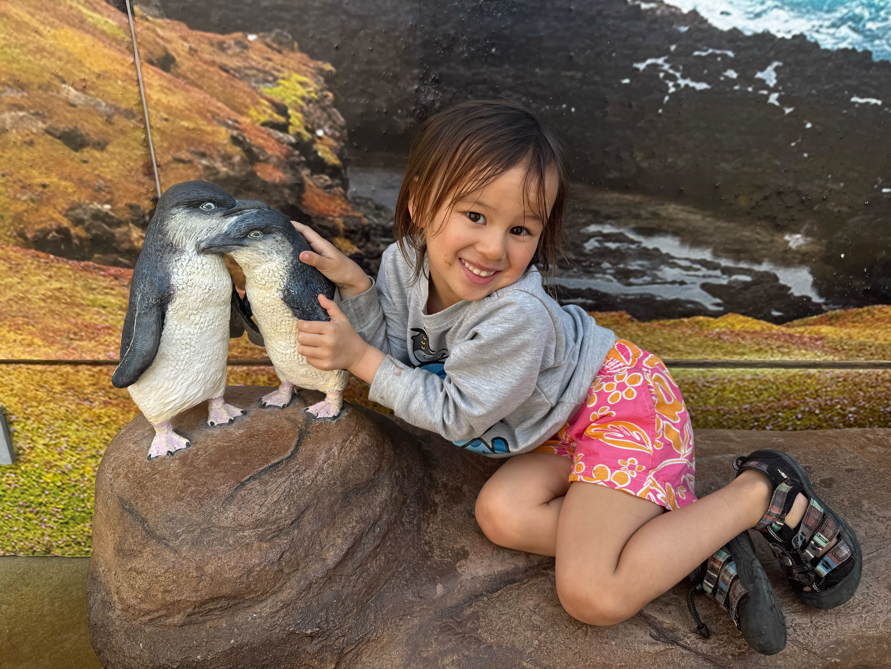
Roz really loved having a flower crown. This was just some random park enjoying some bubble tea.
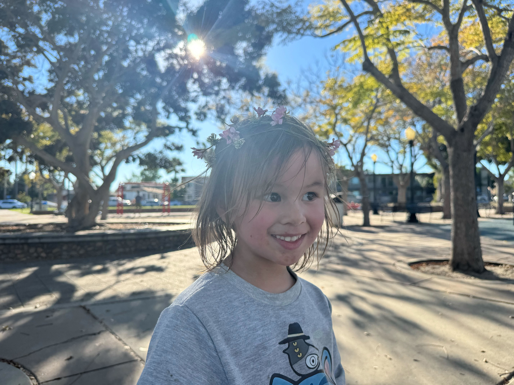
Of course, Duck needed to fish. We caught so many fish. The Pacific is not like the Atlantic though. This was a Pacific Chub Mackerel that was duck's first fish on the trip.
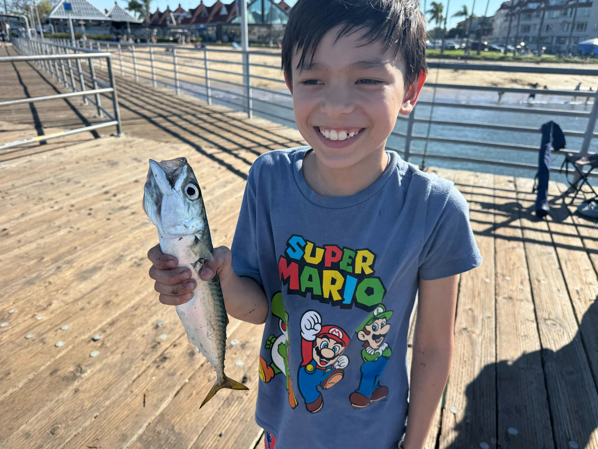
The kids really like walking around Balboa Park, it was so hot though. Even in March, the days were super sunny and at 80 degrees. Roz did not like walking through the park.
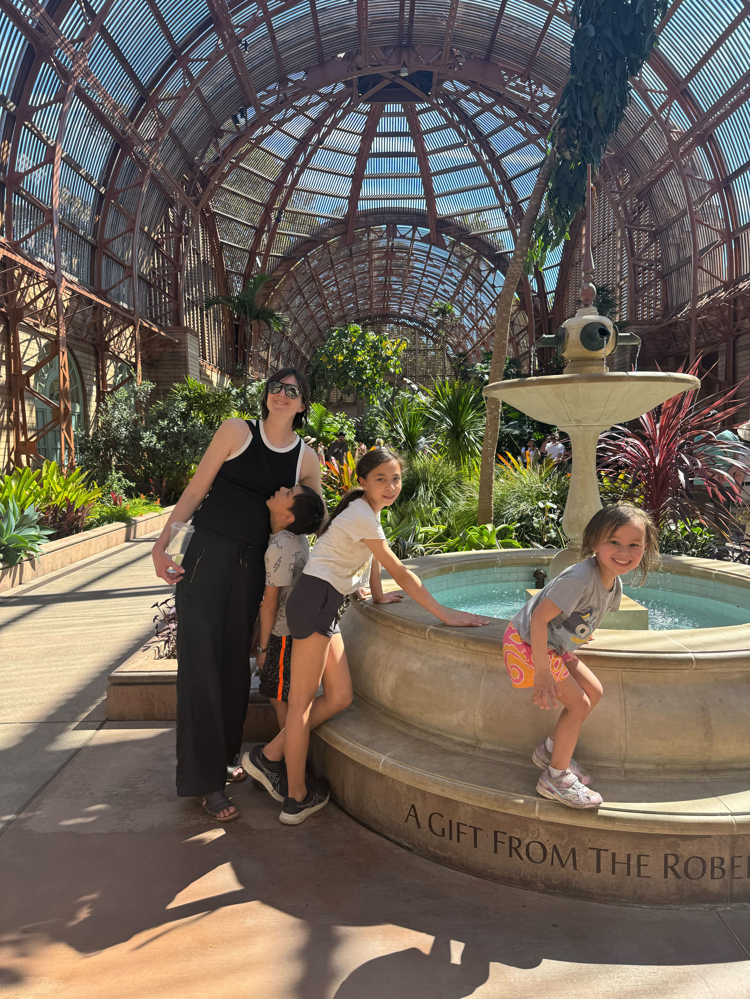
This was a painting Roz really loved. She really like the "Valley dog" in the corner.
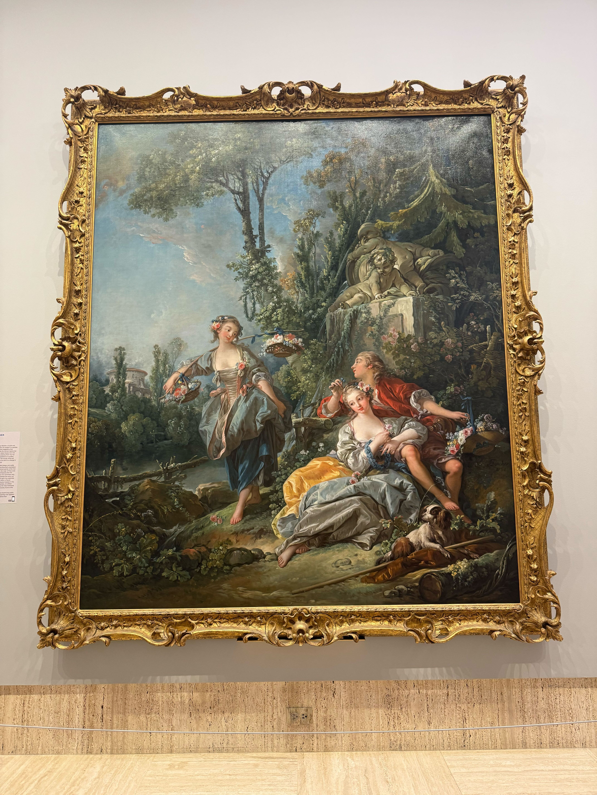
All the kid's favorite spots were the tide pools. They loved harassing the wild life and looking through the pools. This pool was at Point Lima.
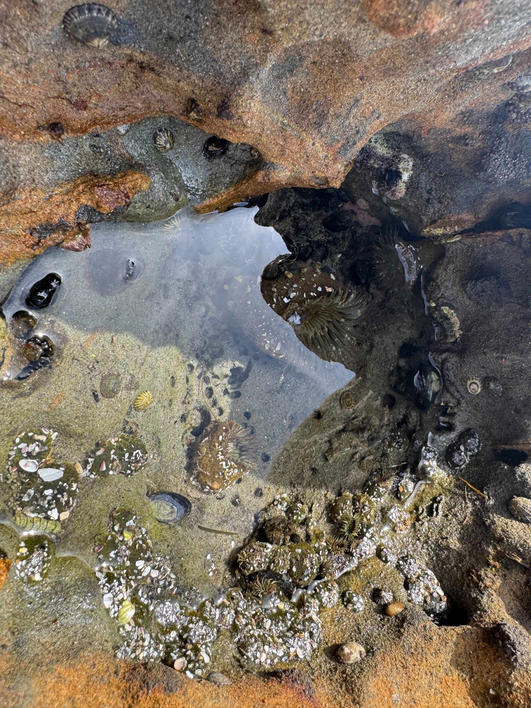
It was also really cool that the beaches were just adjacent to some crazy rock formations. The kids really just wanted to goto the beach everyday.

I caught some fish too. We really liked fishing at Embarcadero Pier. There were a lot of fish in that area. This was a barred sand bass.
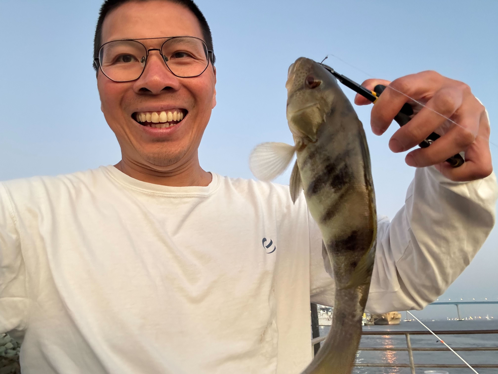
Point Lima was also really nice. The kids really enjoyed looking down over the seals and looking through tide pools. There were so sick of walking by this point.
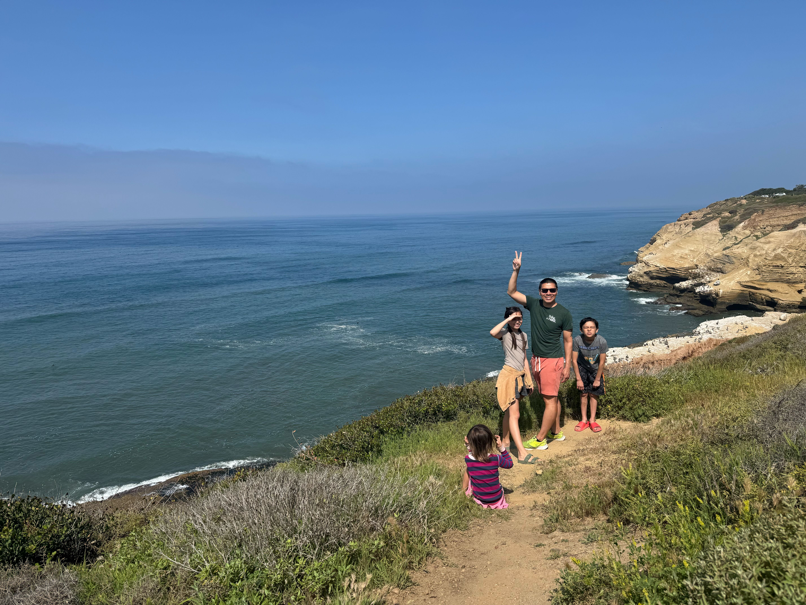
The biodiversity of San Diego really amazing. There were so many hummingbirds.
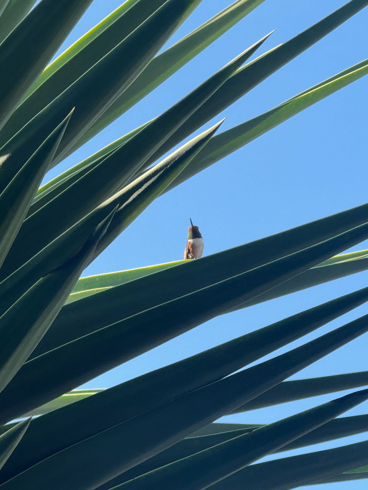
But to be real, San Diego food was a bit sub par. The best food were the food trucks. Here we were eating from the taco truck in the area we lived in.
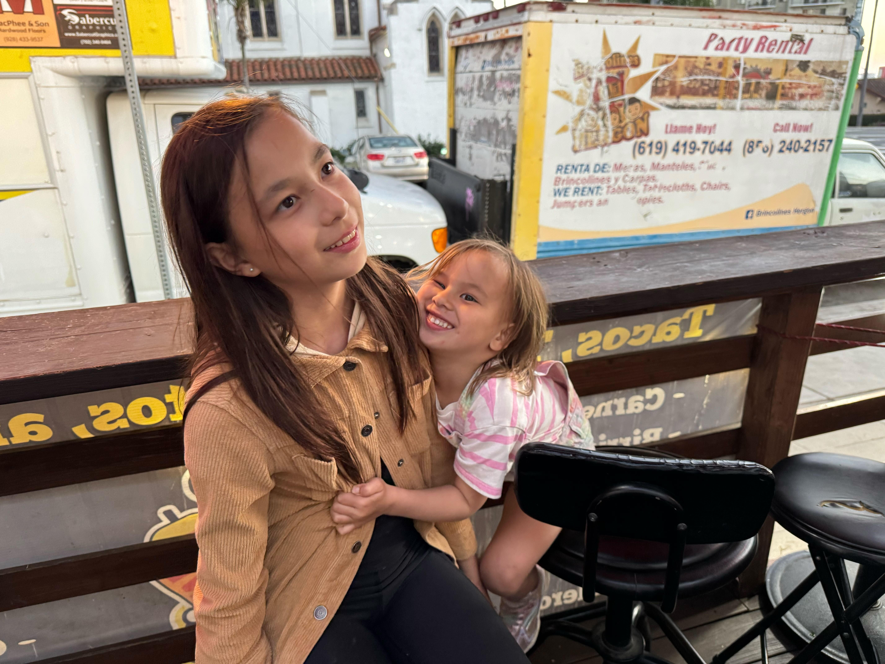